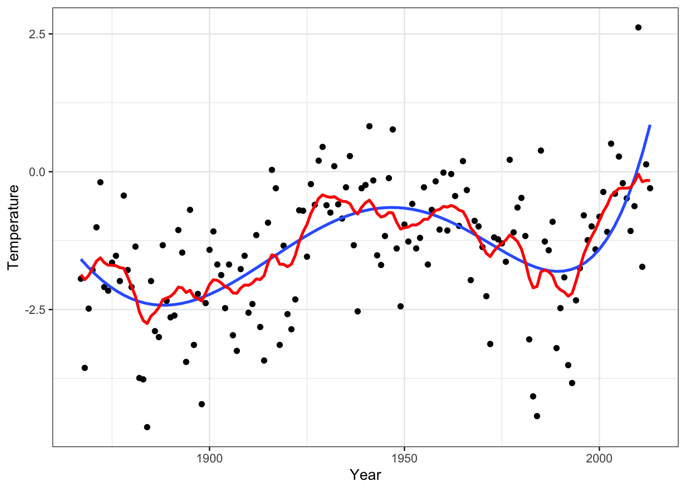
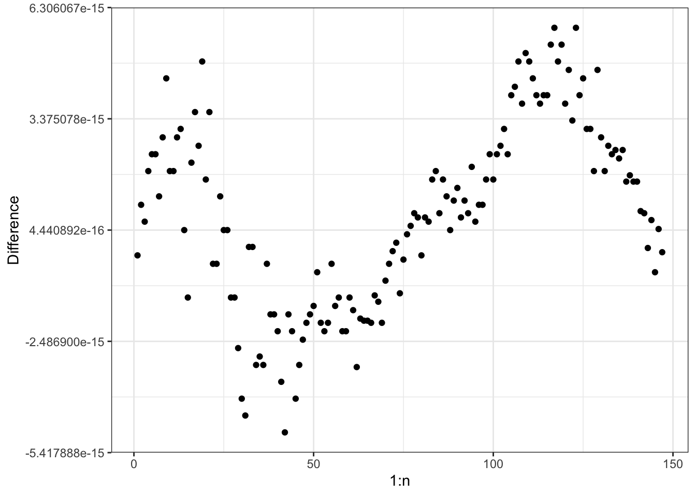
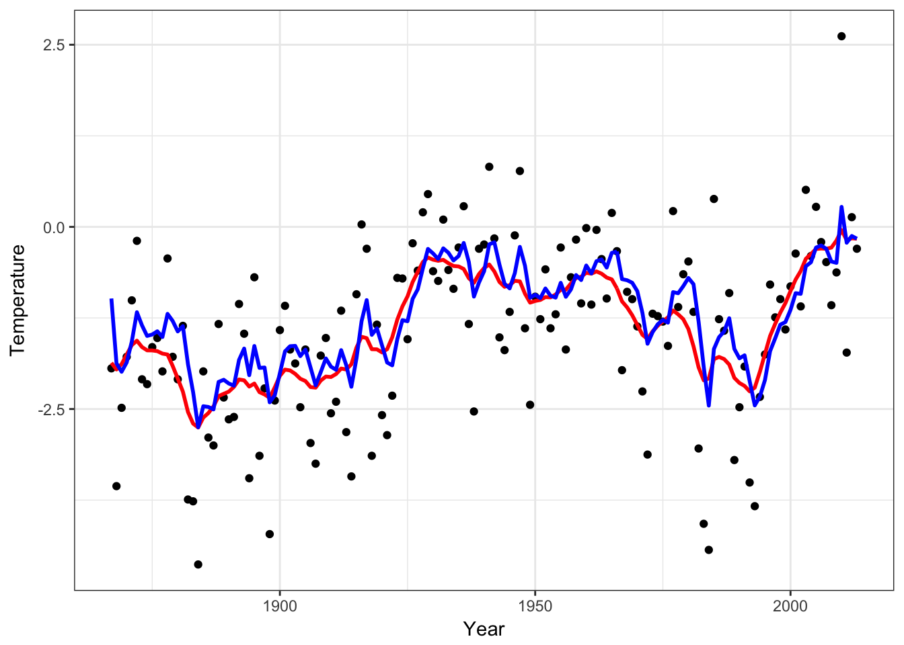

3.7 The Kalman filter
3.7.1 AR(1)-example
Suppose that \(|\alpha| < 1\), \(X_1 = \epsilon_1 / \sqrt{1 - \alpha^2}\) and \[X_i = \alpha X_{i-1} + \epsilon_i\] for \(i = 2, \ldots, n\) with \(\epsilon = \epsilon_{1:n} \sim \mathcal{N}(0, \sigma^2 I)\).
We have \(\mathrm{cov}(X_i, X_j) = \alpha^{|i-j|} / (1 - \alpha^2)\), thus we can find \(\Sigma_x\) and compute \[E(X_n \mid Y) = ((I + \sigma^2 \Sigma_x^{-1})^{-1} Y)_n\]
Figure 3.19: Smoothers
3.7.2 The Kalman smoother
From the identity \(\epsilon_i = X_i - \alpha X_{i-1}\) it follows that \(\epsilon = A X\) where
\[A = \left( \begin{array}{cccccc} \sqrt{1 - \alpha^2} & 0 & 0 & \ldots & 0 & 0 \\ -\alpha & 1 & 0 & \ldots & 0 & 0 \\ 0 & -\alpha & 1 & \ldots & 0 & 0 \\ \vdots & \vdots & \vdots & \ddots & \vdots & \vdots \\ 0 & 0 & 0 & \ldots & 1 & 0 \\ 0 & 0 & 0 & \ldots & -\alpha & 1 \\ \end{array}\right),\]
This gives \(I = V(\epsilon) = A \Sigma_x A^T\), hence \[\Sigma_x^{-1} = (A^{-1}(A^T)^{-1})^{-1} = A^T A.\]
We have shown that \[\Sigma_x^{-1} = \left( \begin{array}{cccccc} 1 & -\alpha & 0 & \ldots & 0 & 0 \\ -\alpha & 1 + \alpha^2 & -\alpha & \ldots & 0 & 0 \\ 0 & -\alpha & 1 + \alpha^2 & \ldots & 0 & 0 \\ \vdots & \vdots & \vdots & \ddots & \vdots & \vdots \\ 0 & 0 & 0 & \ldots & 1 + \alpha^2 & -\alpha \\ 0 & 0 & 0 & \ldots & -\alpha & 1 \\ \end{array}\right).\]
Hence \[I + \sigma^2 \Sigma_x^{-1} = \left( \begin{array}{cccccc} \gamma_0 & \rho & 0 & \ldots & 0 & 0 \\ \rho & \gamma & \rho & \ldots & 0 & 0 \\ 0 & \rho & \gamma & \ldots & 0 & 0 \\ \vdots & \vdots & \vdots & \ddots & \vdots & \vdots \\ 0 & 0 & 0 & \ldots & \gamma & \rho \\ 0 & 0 & 0 & \ldots & \rho & \gamma_0 \\ \end{array}\right)\]
with \(\gamma_0 = 1 + \sigma^2\), \(\gamma = 1 + \sigma^2 (1 + \alpha^2)\) and \(\rho = -\sigma^2 \alpha\) is a tridiagonal matrix.
The equation
\[\left( \begin{array}{cccccc} \gamma_0 & \rho & 0 & \ldots & 0 & 0 \\ \rho & \gamma & \rho & \ldots & 0 & 0 \\ 0 & \rho & \gamma & \ldots & 0 & 0 \\ \vdots & \vdots & \vdots & \ddots & \vdots & \vdots \\ 0 & 0 & 0 & \ldots & \gamma & \rho \\ 0 & 0 & 0 & \ldots & \rho & \gamma_0 \\ \end{array}\right) \left( \begin{array}{c} x_1 \\ x_2 \\ x_3 \\ \vdots \\ x_{n-1} \\ x_n \end{array}\right) = \left(\begin{array}{c} y_1 \\ y_2 \\ y_3 \\ \vdots \\ y_{n-1} \\ y_n \end{array}\right)\]
can be solved by a forward and backward sweep.
Forward sweep:
- Set \(\rho_1' = \rho / \gamma_0\) and \(y_1' = y_1 / \gamma_0\),
- then recursively \[\rho_i' = \frac{\rho}{\gamma - \rho \rho_{i-1}'} \quad \text{and} \quad y_i' = \frac{y_i - \rho y_{i-1}'}{\gamma - \rho \rho_{i-1}'}\] for \(i = 2, \ldots, n-1\)
- and finally \[y_n' = \frac{y_n - \rho y_{n-1}'}{\gamma_0 - \rho \rho_{n-1}'}.\]
By the forward sweep the equation is transformed to
\[\left( \begin{array}{cccccc} 1 & \rho_1' & 0 & \ldots & 0 & 0 \\ 0 & 1 & \rho_2' & \ldots & 0 & 0 \\ 0 & 0 & 1 & \ldots & 0 & 0 \\ \vdots & \vdots & \vdots & \ddots & \vdots & \vdots \\ 0 & 0 & 0 & \ldots & 1 & \rho_{n-1}' \\ 0 & 0 & 0 & \ldots & 0 & 1 \\ \end{array}\right) \left( \begin{array}{c} x_1 \\ x_2 \\ x_3 \\ \vdots \\ x_{n-1} \\ x_n \end{array}\right) = \left(\begin{array}{c} y_1' \\ y_2' \\ y_3' \\ \vdots \\ y_{n-1}' \\ y_n' \end{array}\right),\]
which is then solved by backsubstitution from below; \(x_n = y_n'\) and \[x_{i} = y_i' - \rho_{i}' x_{i+1}, \quad i = n-1, \ldots, 1.\]
3.7.3 Implementation
#include <Rcpp.h>
using namespace Rcpp;
// [[Rcpp::export]]
NumericVector KalmanSmooth(NumericVector y, double alpha, double sigmasq) {
double tmp, gamma0 = 1 + sigmasq, rho = - sigmasq * alpha;
double gamma = 1 + sigmasq * (1 + alpha * alpha);
int n = y.size();
NumericVector x(n), rhop(n - 1);
rhop[0] = rho / gamma0;
x[0] = y[0] / gamma0;
for(int i = 1; i < n - 1; ++i) { /* Forward sweep */
tmp = (gamma - rho * rhop[i - 1]);
rhop[i] = rho / tmp;
x[i] = (y[i] - rho * x[i - 1]) / tmp;
}
x[n - 1] = (y[n - 1] - rho * x[n - 2]) / (gamma0 - rho * rhop[n - 2]);
for(int i = n - 2; i >= 0; --i) { /* Backsubstitution */
x[i] = x[i] - rhop[i] * x[i + 1];
}
return x;
}Result, \(\alpha = 0.95\), \(\sigma^2 = 10\)

Comparing results
Sigma <- outer(1:n, 1:n,
function(i, j) alpha^(abs(i - j))) / (1 - alpha^2)
Smooth <- Sigma %*% solve(Sigma + sigmasq * diag(n))
qplot(1:n, Smooth %*% Nuuk_year$Temperature - ySmooth) +
ylab("Difference")
Note that the forward sweep computes \(x_n = E(X_n \mid Y)\), and from this, the backsubstitution solves the smoothing problem of computing \(E(X \mid Y)\).
The Gaussian process used here (the AR(1)-process) is not very smooth and nor is the smoothing of the data. This is related to the kernel function \(K(s) = \alpha^{|s|}\) being non-differentiable in 0.
Many smoothers are equivalent to a Gaussian process smoother with an appropriate choice of kernel. Not all have a simple inverse covariance matrix and a Kalman filter algorithm.
3.7.4 The Kalman filter
#include <Rcpp.h>
using namespace Rcpp;
// [[Rcpp::export]]
NumericVector KalmanFilt(NumericVector y, double alpha, double sigmasq) {
double tmp, gamma0 = 1 + sigmasq, rho = - sigmasq * alpha, yp;
double gamma = 1 + sigmasq * (1 + alpha * alpha);
int n = y.size();
NumericVector x(n), rhop(n);
rhop[0] = rho / gamma0;
yp = y[0] / gamma0;
x[0] = y[0] / (1 + sigmasq * (1 - alpha * alpha));
for(int i = 1; i < n; ++i) {
tmp = (gamma - rho * rhop[i - 1]);
rhop[i] = rho / tmp;
/* Note differences when compared to smoother */
x[i] = (y[i] - rho * yp) / (gamma0 - rho * rhop[i - 1]);
yp = (y[i] - rho * yp) / tmp;
}
return x;
}Result, \(\alpha = 0.95\), \(\sigma^2 = 10\)
